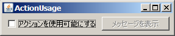
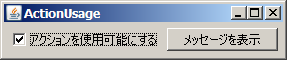
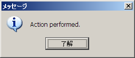

S2Swing
S2Swing
S2Swing
S2Swing
このページの内容に対応するソースコードは、s2swing-tutorialアーカイブのactionパッケージ以下にあります。
ここでは、@S2Actionアノテーションと@ActionTargetアノテーションを使ったアクションの定義方法について学習します。
Swingのjavax.swing.Actionインタフェースは、ボタンやメニュー項目のクリックに対応する 「新規作成」や「上書き保存」といったひとまとまりの機能を、統一的に記述するための仕組みです。 S2Swingでは、@S2Actionアノテーションやリソースファイルを活用して、このアクションをより便利に定義することができます。
アクションの使用例として、チェックボックスとボタンが配置してあるフレームを考えます。 ボタンにはアクションが関連付けられており、クリック時にアクションが実行されるものとします。 またアクションは、チェックボックスがチェックされているときに限り実行できるものとします。
それでは、以下のActionUsageFrameクラスを見てみましょう。
package action;
import java.awt.Container;
import java.awt.FlowLayout;
import javax.swing.JButton;
import javax.swing.JCheckBox;
import javax.swing.JOptionPane;
import org.seasar.swing.annotation.ActionTarget;
import org.seasar.swing.annotation.S2Action;
import org.seasar.swing.component.S2Frame;
public class ActionUsageFrame extends S2Frame {
private static final long serialVersionUID = 1L;
private JCheckBox checkBox = new JCheckBox();
@ActionTarget("showMessage")
private JButton button = new JButton();
public void initialize() {
setDefaultCloseOperation(EXIT_ON_CLOSE);
Container c = getContentPane();
c.setLayout(new FlowLayout());
c.add(checkBox);
c.add(button);
}
public boolean isShowMessageEnabled() {
return checkBox.isSelected();
}
@S2Action(enabled = "showMessageEnabled")
public void showMessage() {
JOptionPane.showMessageDialog(this, "Action performed.");
}
}
19行目では、buttonフィールドに、@ActionTargetアノテーションで"showMessage"という文字列が指定されています。 このアノテーションによって、buttonとshowMessageアクションが関連付けられています。
showMessageアクションの処理内容は、35行目からのshowMessage()メソッドに記述されています。 無引数のpublicメソッドに@S2Actionアノテーションを付与することで、そのメソッドがアクションハンドラとなります。 このとき、メソッド名がそのままアクション名になります。
さらに34行目では、@S2Actionアノテーションにenabled引数として"showMessageEnabled"が指定されています。 これは、showMessageEnabledプロパティ、つまり30行目からのisShowMessageEnabled()メソッドの戻り値がtrueのときに限り、 アクションを実行可能とすることを指示しています。なお、この引数には任意のOGNL式を指定できます。
@S2Actionアノテーションのenabled引数では、Swing Application Frameworkの@Actionアノテーションにおける enabledProperty引数と違い、PropertyChangeEventを扱う必要がありません。
次に、ActionUsageFrameに対応するaction/resources/ActionUsageFrame.propertiesファイルを作成します。
title = ActionUsage checkBox.text = アクションを使用可能にする showMessage.Action.text = メッセージを表示
このように、[アクション名].Action.textというキーを使って、アクションの表示テキストを指定します。
それでは、ActionUsageアプリケーションを実行してみましょう。
 
チェックボックスをオンにしているときのみ、「メッセージを表示」ボタンがクリック可能になります。このときボタンをクリックすると、メッセージボックスが表示されます。

従来のSwingアプリケーションと比較して、非常に簡潔な記述でアクションを制御できることが分かると思います。